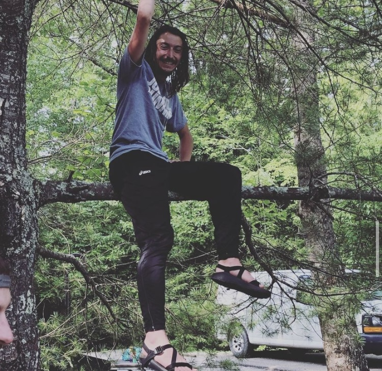

Lore Page

So you are looking to know more about Robert
The most important thing to know about me, is that I am a huge nerd. I am passionate about Video Games. Whether it be learning about design, playing, modding, or just talking about Video Games. I love it, and as result I Gamify everything.
The Brief histoy: Software Development, World Religions, and Atheletics.
| I switched career paths from a Children's and Youth Minister to Software Developer. With no previous coding experience, only a passion for tech, video games, and good design. This transition came about due to a feeling of wanting to create more and teach less. I spent years learning to teach others, now I wanted to just create things for people to use. Specifically I wanted to learn how to make video games, and other application based experiences. From web games as a kid, to playing online games today, I have I spent most of my time being a consumer. I wanted to join the creative side and give back. Currently I am building websites as a freelancer and during my job I manage our prebuilt website with CSS, HTML, and JavaScript. I also do adminstrative work with the SQL Database and our Inventory management software. However, my goal is be part of a development team and create, manage, and maintain an application through out its life cycle. |
| I graduated from Lipscomb University with a degree and Theology and Youth Ministry in 2018, after which I persuad an online Masters in Theology at Campbellsville University. During both of theres periods I volunteered and worked in many roles as a Youth Minister, working with teenagers, teaching them about the bible, creating games and activities for them. My goal was to create safe places for kids to be kids, and to teach them life truths to treat others with respect and make the world a better place. From that I became fascinated with Religions, not just Westeren Christianity, but all religions. I began a journey of learning about others cultures/religion. While also deconstructing my own world views and seeing what was good and what was harmful for me. I still love learning about how other people walk in faith, what traditions they partake in. But I am retired from doing ministry as a career, and in my freetime. I believe I can have more of an impact by learning and hearing what others believe then teaching what I believe. |
| I have been a Runner for the last 11 years. Being part of a State Championship Team in high school, to a Division 1 Cross Country and Track Field athlete. To last year finishing my first marathon, and training a friend to finish one with me. I am extremly competive person, I strived in all my career to be the best. Within the last couple years though, I have been slowing down alot, running less but working on my health more. Learning how to train my body in different ways. One of my favorite things will always be creating training plans, tweaking details to personalize plans based on specific needs. Currently, I am working on making a training plan to gain muscle mass and flexibility. |